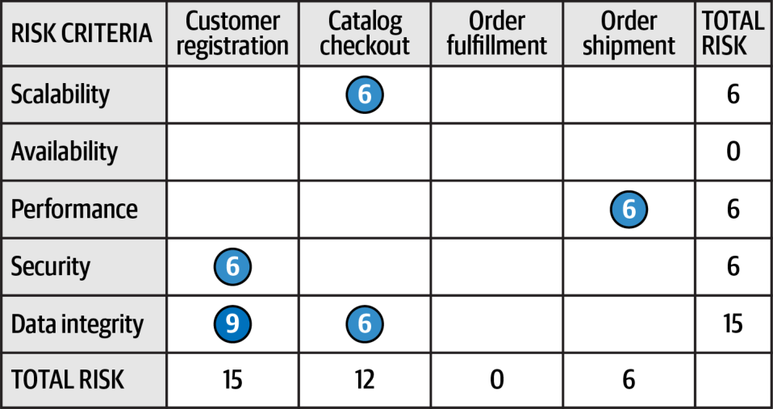
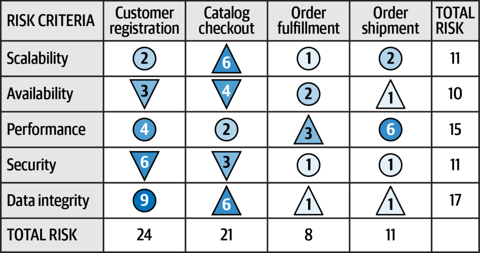
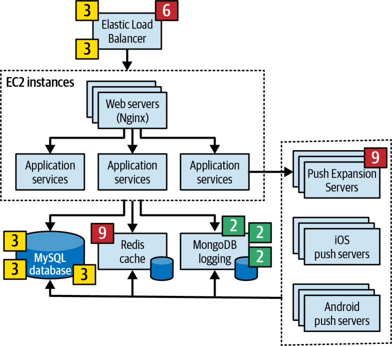
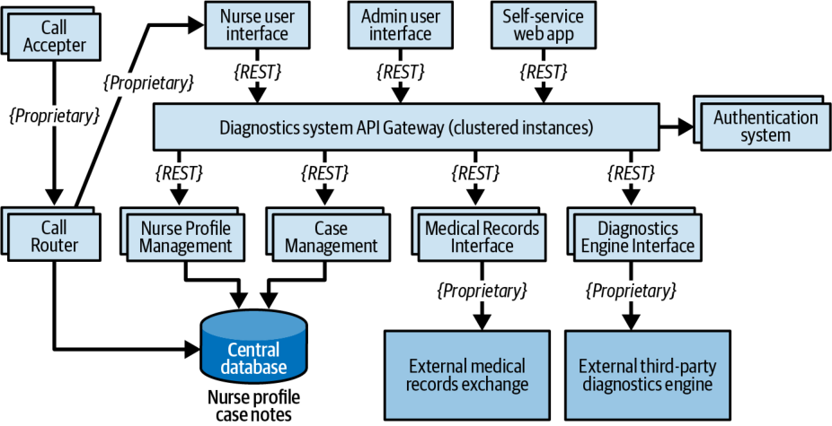
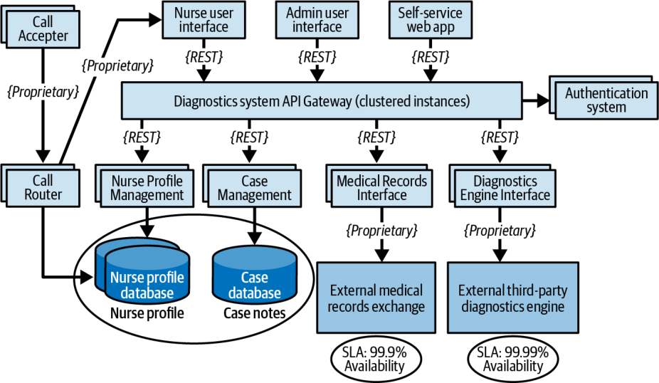

هر معماری ریسکهایی به همراه دارد: برخی عملیاتی (مانند در دسترسبودن، مقیاسپذیری و یکپارچگی داده) و برخی ساختاری (مانند کوپلینگ ایستا میان مؤلفههای منطقی). تحلیل ریسک معماری یکی از مهمترین فعالیتهای معماران است و به آنها امکان میدهد کاستیها و فرسایش ساختاری (structural decay) درون معماری را برطرف کنند و اقدام اصلاحی انجام دهند. در این فصل، برخی فنون و رویههای کلیدی برای کمّیسازی، ارزیابی و شناسایی ریسک را نشان میدهیم و فعالیتی به نام طوفان ریسک (risk storming) را معرفی میکنیم.
ماتریس ریسک
نخستین چیزی که در ارزیابی ریسک معماری باید تعیین شود، سطح آن است: اینکه ریسکِ بخش مشخصی از معماری پایین، متوسط یا بالاست. چالش اینجاست که ارزیابی ریسک میتواند ذهنی (subjective) باشد. ممکن است یک معمار بر این نظر باشد که جنبهای از معماری ریسک بالایی دارد، در حالی که نظر معمار دیگر این باشد که همان جنبه ریسک متوسطی دارد. در اینجا واژهٔ نظر را برجسته کردهایم تا بر ذهنی بودنِ ارزیابی ریسک تأکید کنیم. خوشبختانه، معماران ماتریس ارزیابی ریسکِ سودمندی در اختیار دارند که به ما کمک میکند ریسک را سنجشپذیرتر کنیم.
ماتریس ارزیابی ریسک معماری (architecture risk-assessment matrix) (شکل ۲۲-۱) برای سنجش ریسک از دو بُعد استفاده میکند: اثر کلیِ (impact) ریسکِ مورد نظر و احتمال وقوعِ (likelihood) آن ریسک. معمار هر بُعد را پایین (۱)، متوسط (۲) یا بالا (۳) رتبهبندی میکند و سپس اعداد را در هر خانهٔ تقاطع ماتریس در هم ضرب میکند. این کار نمایشی عددی از ریسک فراهم میکند و فرایند سنجش ریسک را عینیتر (objective) میسازد. رتبههای ۱ و ۲ ریسک پایین (معمولاً با رنگ سبز)، اعداد ۳ و ۴ ریسک متوسط (معمولاً زرد) و اعداد ۶ تا ۹ ریسک بالا (معمولاً قرمز) به شمار میآیند. استفاده از سایهزنی برای نمایش سیاهوسفید و برای افرادی که قادر به تشخیص رنگها نیستند میتواند سودمند باشد.
شکل ۲۲-۱. ماتریس تعیین ریسک معماری
برای نشان دادنِ سودمندی ماتریس ریسک، آن را در یک مثال به کار میبریم. فرض کنید نگران در دسترسبودنِ پایگاهدادهٔ مرکزیِ اصلیِ برنامهٔ کاربردی خود هستید.
نخست، اثر کلی را در نظر میگیرید: اگر پایگاهداده از کار بیفتد یا در دسترس نباشد چه رخ میدهد؟ فرض کنید اثر را ریسکی بالا ارزیابی میکنید و آن را به ردیف آخر ماتریس در شکل ۲۲-۱ نگاشت میکنید؛ یعنی ۳ (متوسط)، ۶ (بالا) یا ۹ (بالا). اما وقتی بُعد دوم، یعنی احتمال وقوع آن ریسک، را در نظر میگیرید، درمییابید که پایگاهداده روی سرورهایی با در دسترسبودن بالا و در پیکربندی خوشهای قرار دارد و احتمال در دسترس نبودنِ پایگاهداده پایین است (ستون نخست ماتریس). تقاطع اثر بالا و احتمال پایین، رتبهٔ ریسک کلیِ ۳ (ریسک متوسط) را برای در دسترسبودنِ پایگاهدادهٔ مرکزیِ اصلی به دست میدهد.
ارزیابیهای ریسک
میتوانید از ماتریس ریسک برای ساختن چیزی استفاده کنید که ارزیابی ریسک (risk assessment) نامیده میشود: گزارشی خلاصه از ریسک کلیِ یک معماری، با معیارهای ارزیابیِ معنادار بر پایهٔ یک بافتار (سرویسها، نواحی زیرحوزه یا نواحی حوزهٔ یک سیستم). ما ارزیابیهای ریسک بسیاری انجام دادهایم و دریافتهایم که ویژگیهای معماری معیارهای بسیار خوبی برای ارزیابی ریسکاند. وقتی ویژگیهای معماریِ حیاتیِ سیستم مقیاسپذیری، کشسانی و یکپارچگی دادهاند، چرا باید وقت خود را صرف تحلیل ریسک کارایی کنیم؟ شناختن ویژگیهایی مانند آنچه در فصل ۴ توصیف شد، نخستین گام در تحلیل ریسک معماری است.
قالب پایهٔ گزارش ارزیابی ریسک در شکل ۲۲-۲ نشان داده شده است. در اینجا ۱ و ۲ نمایانگر ریسک پایین، ۳ و ۴ نمایانگر ریسک متوسط و ۶ و ۹ نمایانگر ریسک بالا هستند. معیارهای ریسک در سمت چپ صفحهگسترده و بافتارها در بالای آن قرار دارند.
شکل ۲۲-۲. نمونهای از یک ارزیابی ریسک استاندارد
در این ارزیابی ریسک، یک سیستم سفارشگیری تجارت الکترونیک را مثال میزنیم. این ارزیابی پنج معیار را میسنجد که نمایانگر ویژگیهای معماریِ حیاتیِ سیستماند. در بالای جدول چهار بافتار مختلف قرار دارد که هر یک نمایانگر حوزهای جداگانه است (ثبتنام مشتری، پرداخت کاتالوگ، تحقق سفارش و ارسال سفارش). بافتارِ حوزه یا زیرحوزه بهخوبی کار میکند؛ تحلیل ریسک در سطح سرویسها معمولاً بیش از حد ریزدانه (fine-grained) است و ریسکِ مربوط به ارتباط یا هماهنگی میان چند سرویس را در نظر نمیگیرد.
ویژگی خوبِ استفاده از ریسکِ کمّیشده این است که هم معیارهای ریسک و هم بافتار را در نظر میگیرد. برای مثال، در شکل ۲۲-۲، مجموع ریسکِ انباشته برای یکپارچگی داده ۱۷ است و از نظر معیارها، آن را پرریسکترین ناحیه میکند. ریسک انباشته برای در دسترسبودن تنها ۱۰ است (کمریسکترین معیار). اما از نظر ریسکِ نسبیِ هر ناحیهٔ بافتاری، ثبتنام مشتری حوزهای است که از نظر بافتار بیشترین ریسک را دارد، در حالی که تحقق سفارش کمریسکترین بافتار است. این اطلاعات برای تعیین اولویتها و اینکه تلاش بیشتر برای کاهش ریسک کجا صرف شود، سودمند است.
این نمونهٔ ارزیابی ریسک همهٔ نتایج تحلیل ریسک را در بر دارد، اما گاهی سودمند است جزئیات را فیلتر کنیم تا مشکلات مشخصی برجسته شوند. برای مثال، فرض کنید شما در نقش معمار این سیستم در جلسهای هستید و دربارهٔ نواحی پرریسک سیستم به ذینفعان گزارش میدهید. به جای ارائهٔ ارزیابی ریسکِ کامل، چنانکه شکل ۲۲-۲ نشان میدهد، میتوانید نواحی کمریسک و با ریسک متوسط (نویز) را فیلتر کنید تا نواحی پرریسک (سیگنال) برجسته شوند. بهبود نسبت کلیِ سیگنال به نویز (signal-to-noise ratio) به شما امکان میدهد پیامی اثربخشتر و با حواسپرتیِ کمتر منتقل کنید. شکل ۲۲-۳ نسخهٔ فیلترشدهٔ همان ارزیابی ریسک را نشان میدهد. دو تصویر را با هم مقایسه کنید تا ببینید پیام در ارزیابیِ فیلترشدهٔ دوم چقدر روشنتر است.

شکل ۲۲-۳. فیلتر کردن ارزیابی ریسک برای نمایش تنها ریسکهای بالا
یکی از مشکلات نسخهٔ کامل ارزیابی ریسک این است که تنها تصویری لحظهای را نشان میدهد، نه اینکه اوضاع در حال بهبود است یا بدتر شدن. به بیان دیگر، شکل ۲۲-۲ جهت ریسک (direction of risk) را نشان نمیدهد. میتوانید جهت ریسک را با استفاده از سنجشهای پیوسته از طریق توابع برازش، چنانکه در فصل ۶ توصیف شد، تعیین کنید. تحلیل عینیِ هر معیار ریسک به شما امکان میدهد روندها را مشاهده کنید و جهت هر معیار ریسک را تشخیص دهید.
در شکل ۲۲-۴، بُعد سومی به ارزیابی ریسک میافزاییم: جهت. از مثلثِ رو به بالا استفاده میکنیم تا نشان دهیم ریسکِ آن معیار و بافتارِ مشخص در حال بدتر شدن است؛ نوک مثلث به سمت بالا، یعنی به سوی عددی بزرگتر، اشاره میکند. در مقابل، از مثلثِ وارونه استفاده میکنیم تا نشان دهیم ریسک در حال کاهش است (به بیان دیگر، نوک مثلث به سمت پایین، یعنی به سوی عددی کوچکتر، اشاره میکند). سرانجام، از دایره برای نمایش ریسکی استفاده میکنیم که تغییری نمیکند؛ نه بهتر میشود و نه بدتر. این نمادها ممکن است گیجکننده شوند؛ از این رو همیشه توصیه میکنیم هنگام استفاده از هر نوع نمادی برای نمایش جهت، راهنمایی (key) نیز بگنجانید.

شکل ۲۲-۴. نمایش جهت ریسک با استفاده از مثلثها
این ارزیابی ریسک معماریِ بازنگریشده، که اکنون جهت را نیز نشان میدهد، داستانی متفاوت با نسخهٔ اصلی روایت میکند. نخست، میبینیم که بر پایهٔ سنجشهای پیوسته، یکپارچگی داده برای پرداخت کاتالوگ، تحقق سفارش و ارسال سفارش در حال بدتر شدن است (مثلث رو به بالا) که میتواند نشانهٔ مشکلی در پایگاهداده باشد. اما امنیت و در دسترسبودن برای ثبتنام مشتری و پرداخت کاتالوگ در مجموع در حال بهتر شدناند (مثلث رو به پایین) که از بهبود در این نواحی حکایت میکند.
در ادامه، فرایندی به نام طوفان ریسک را توصیف میکنیم که تیمها میتوانند از آن برای تعیین چگونگیِ شناسایی سطح ریسکِ بافتارها و معیارهای مشخص استفاده کنند.
طوفان ریسک
هیچ معماری نمیتواند بهتنهایی ریسک کلیِ یک سیستم را تعیین کند؛ به دو دلیل. نخست اینکه معماری که تنها کار میکند ممکن است یک ناحیهٔ ریسک را از قلم بیندازد یا نادیده بگیرد؛ دوم اینکه معماران بسیار اندکی از همهٔ بخشهای سیستم شناخت کامل دارند. اینجاست که طوفان ریسک به کار میآید.
طوفان ریسک (risk storming) تمرینی مشارکتی برای تعیین ریسک معماری در یک بُعد مشخص (بافتار یا معیار) است. هرچند بیشتر تلاشهای طوفان ریسک چند معمار را درگیر میکنند، اکیداً توصیه میکنیم توسعهدهندگان ارشد (senior developers) و سرپرستان فنی (tech leads) را نیز مشارکت دهید. آنها نهتنها دیدگاهی پیادهسازیمحور دربارهٔ ریسک معماری ارائه میکنند، بلکه مشارکتشان به آنها کمک میکند معماری را بهتر بفهمند.
طوفان ریسک سه مرحله دارد: شناسایی، اجماع و کاهش. در مرحلهٔ فردی (مرحلهٔ ۱)، همهٔ شرکتکنندگان، هر یک بهتنهایی، با استفاده از ماتریس ریسک به نواحی گوناگون معماری ریسک نسبت میدهند. این مرحلهٔ فردیِ طوفان ریسک ضروری است تا شرکتکنندگان بر یکدیگر اثر نگذارند یا توجه دیگران را از نواحی مشخصی از معماری منحرف نکنند. در دو مرحلهٔ مشارکتی، همهٔ شرکتکنندگان با هم کار میکنند تا دربارهٔ اینکه نواحی ریسک کداماند به اجماع برسند و دربارهٔ آنها گفتوگو کنند (مرحلهٔ ۲) و راهحلهایی برای کاهش ریسک بیابند (مرحلهٔ ۳).
هر سه مرحله از یک نمودار معماریِ جامع یا بافتاری (contextual architecture diagram) استفاده میکنند (فصل ۲۳ را ببینید). معماری که تلاش طوفان ریسک را هدایت میکند (این شخص را تسهیلگر (facilitator) مینامیم) مسئول فرستادنِ نمودارهای بهروزشده برای جلسهٔ طوفان ریسک به همهٔ شرکتکنندگان است.
شکل ۲۲-۵ نمونهای از یک معماری را نشان میدهد که برای روشن کردنِ فرایند طوفان ریسک از آن استفاده میکنیم. در این معماری، یک Elastic Load Balancer هر درخواست را به یکی از نمونههای EC2 میفرستد که سرورهای وب (Nginx) و سرویسهای برنامه را در بر دارند. سرویسهای برنامه به یک پایگاهدادهٔ MySQL، یک کش Redis و یک پایگاهدادهٔ MongoDB (برای ثبت وقایع) فراخوانی میفرستند. آنها همچنین Push Expansion Servers را فراخوانی میکنند که آنها نیز به نوبهٔ خود همگی با پایگاهدادهٔ MySQL، کش Redis و امکان ثبت وقایعِ MongoDB تعامل دارند. (اگر همهٔ این محصولات و واژههای داغ را نمیشناسید نگران نباشید؛ این معماریِ بیش از حد مبهم و کلی تنها برای نشان دادنِ شیوهٔ کار طوفان ریسک آمده است.)
شکل ۲۲-۵. نمونهٔ نمودار معماری برای جلسهٔ طوفان ریسک
کار را با مرحلهٔ ۱ آغاز میکنیم.
مرحلهٔ ۱: شناسایی
مرحلهٔ شناسایی (identification) در طوفان ریسک شامل این است که هر شرکتکننده بهطور فردی نواحی ریسک را در معماری شناسایی کند. در این مرحله حیاتی است که هر شرکتکننده دیدگاه بیطرفانهٔ خود را دربارهٔ ریسکِ موجود ثبت کند، بیآنکه شرکتکنندگان دیگر مسیر نگاهش را تغییر دهند یا بر او اثر بگذارند. مرحلهٔ شناسایی سه گام دارد:
تسهیلگر برای همهٔ شرکتکنندگان دعوتنامهای برای مراحل مشارکتی میفرستد. این دعوتنامه شامل نمودار معماری (یا محل یافتن آن)، معیارهای ریسک و بافتاری که باید تحلیل شود، و تاریخ، زمان و مکان (حضوری یا مجازی) جلسهٔ مشارکتی، همراه با هر جزئیات اجراییِ دیگر است.
شرکتکنندگان با استفاده از ماتریس ریسک، ریسکهای معماری را بهطور فردی تحلیل میکنند.
شرکتکنندگان هر ریسک را پایین (۱–۲)، متوسط (۳–۴) یا بالا (۶–۹) طبقهبندی میکنند و اعداد را روی برگههای یادداشت چسبدارِ (sticky notes) کوچکِ سبز، زرد یا قرمز مینویسند.
بیشتر تلاشهای طوفان ریسک تنها یک معیار یا بافتار مشخص را تحلیل میکنند (مانند «ریسکهای امنیتیِ ما کجاست؟» یا «کدام نواحی در ثبتنام مشتری در معرض ریسکاند؟»). اما اگر در دسترس بودنِ کارکنان یا زمانبندی با مشکل روبهرو باشد، تیم ارزیابی ریسک ممکن است ناچار شود چند بُعد را در یک بافتار مشخص (مانند کارایی و مقیاسپذیری) تحلیل کند. در این موارد، شرکتکنندگان معمولاً معیار مشخص را کنار عدد ریسک روی برگههای یادداشت چسبدار مینویسند. برای مثال، فرض کنید سه شرکتکننده ریسکی را در یک پایگاهدادهٔ مرکزی شناسایی میکنند. هر سه شرکتکننده ریسک را بالا (۶) ارزیابی میکنند، اما یکی از آنها آن را ریسکی برای در دسترسبودن میبیند، در حالی که دو نفر دیگر آن را ریسکی برای کارایی میدانند. شرکتکنندگان باید این دو معیار را جداگانه بررسی کنند.
مرحلهٔ ۲: اجماع
مرحلهٔ اجماع (consensus) در طوفان ریسک کاملاً مشارکتی است و هدفش رسیدن به اجماع میان همهٔ شرکتکنندگان دربارهٔ ریسک یا ریسکهای درون معماری است. این فعالیت زمانی بیشترین اثربخشی را دارد که تسهیلگر یک نمودار معماریِ چاپیِ بزرگ را روی دیوار نصب کند (یا نسخهٔ الکترونیکیِ آن را روی یک صفحهنمایش بزرگ نشان دهد). وقتی شرکتکنندگان به جلسهٔ طوفان ریسک میرسند، تسهیلگر از آنها میخواهد برگههای یادداشت سطح ریسک خود را روی ناحیهٔ مربوط در نمودار معماری بچسبانند (شکل ۲۲-۶ را ببینید).
پس از آنکه همهٔ برگههای یادداشت در جای خود قرار گرفتند، مرحلهٔ مشارکتی میتواند آغاز شود. هدف در اینجا تحلیل گروهیِ نواحی ریسک و رسیدن به اجماع دربارهٔ سطح ریسک آنهاست. در نمونهٔ شکل ۲۲-۶، تیم چند ناحیهٔ ریسک را شناسایی کرده است. (معیارهای واقعی در این مثال اهمیتی ندارند.) میبینیم که:
دو شرکتکننده Elastic Load Balancer را ریسک متوسط (۳) ارزیابی کردهاند، در حالی که یک شرکتکننده آن را ریسک بالا (۶) دانسته است.
یک شرکتکننده Push Expansion Servers را ریسک بالا (۹) ارزیابی کرده است.
سه شرکتکننده پایگاهدادهٔ MySQL را ریسک متوسط (۳) ارزیابی کردهاند.
یک شرکتکننده کش Redis را ریسک بالا (۹) ارزیابی کرده است.
سه شرکتکننده ثبت وقایعِ MongoDB را ریسک پایین (۲) ارزیابی کردهاند.
هیچکس نواحی دیگرِ معماری را دارای ریسک ندانسته است؛ بنابراین روی هیچ ناحیهٔ دیگری برگهٔ یادداشتی نیست.

شکل ۲۲-۶. شناسایی اولیهٔ نواحی ریسک
پایگاهدادهٔ MySQL و ثبت وقایعِ MongoDB در این جلسه به بحث بیشتری نیاز ندارند، زیرا همهٔ شرکتکنندگان بر سر سطح ریسک آنها توافق دارند. اما دربارهٔ Elastic Load Balancer اختلافنظر وجود دارد، و Push Expansion Servers و کش Redis هر کدام تنها از سوی یک شرکتکننده ریسک شناخته شدهاند. حلوفصل این ناهمخوانیها همان چیزی است که مرحلهٔ مشارکتی برای آن وجود دارد.
دو شرکتکننده (Austen و Logan) Elastic Load Balancer را ریسک متوسط (۳) ارزیابی کردهاند و یکی (Addison) آن را ریسک بالا (۶) دانسته است. Austen و Logan از Addison میپرسند چرا این ریسک را بالا ارزیابی کرده است. Addison پاسخ میدهد که اگر Elastic Load Balancer از کار بیفتد، کل سیستم غیرقابل دسترس میشود. هرچند این درست است (و رتبهٔ اثر را به بالا میرساند)، دو شرکتکنندهٔ دیگر Addison را قانع میکنند که به دلیل خوشهبندی، احتمال رخ دادنِ این وضعیت پایین است. Addison موافقت میکند و گروه سطح ریسکِ احتمال وقوع را به متوسط (۳) کاهش میدهد.
با این حال، ماجرا میتوانست مسیر دیگری را طی کند. اگر Austen و Logan جنبهٔ مشخصی از ریسک Elastic Load Balancer را که Addison دیده بود از قلم انداخته بودند، ممکن بود Addison دو شرکتکنندهٔ دیگر را قانع کند که سطح این ریسک را به جای متوسط، بالا طبقهبندی کنند. به همین دلیل است که مرحلهٔ مشارکتیِ طوفان ریسک اهمیت فراوانی دارد.
یک شرکتکننده Push Expansion Servers را ریسک بالا (۹) ارزیابی کرده بود، اما هیچ شرکتکنندهٔ دیگری در این ناحیه از معماری هیچ ریسکی شناسایی نکرده بود. کسی که ریسک را شناسایی کرده بود توضیح میدهد که آن را بالا ارزیابی کرده، زیرا با Push Expansion Servers تجربههای بدی داشته است: این سرورها زیر بارهای سنگینی مشابه بار این معماری مدام از کار میافتادند. این مثال ارزش طوفان ریسک را نشان میدهد: بدون مشارکت آن شرکتکننده، تا مدتها پس از ورود به محیط تولید هیچکس متوجه این ریسک بالا نمیشد.
کش Redis موردی جالب است. یکی از شرکتکنندگان، توسعهدهندهای به نام Devon، آن را ریسک بالا (۹) ارزیابی کرده بود، اما هیچکس دیگری برای آن کش ریسکی قائل نبود. وقتی شرکتکنندگان دیگر از Devon دربارهٔ منطقش برای بالا دانستنِ این ریسک میپرسند، Devon پاسخ میدهد: «کش Redis چیست؟» هرگاه یکی از شرکتکنندگان طوفان ریسک اعلام کند فناوریای را نمیشناسد، آن ناحیه بهطور خودکار سطح ریسک بالا (۹) میگیرد.
مثال کش Redis نشان میدهد چرا مشارکت دادنِ توسعهدهندگان در جلسههای طوفان ریسک اهمیت دارد. اینکه این شرکتکننده فناوری مشخصی را نمیشناخت، اطلاعات ارزشمندی دربارهٔ ریسک کلی در اختیار معمار میگذارد. معمار ممکن است تصمیم بگیرد فناوری را تغییر دهد یا هزینهٔ آموزش را بپذیرد تا تیم توسعه را به سطح لازم برساند.
این مرحله تا زمانی ادامه مییابد که همهٔ شرکتکنندگان بر سر نواحی ریسکِ شناساییشده توافق کنند. وقتی همهٔ برگههای یادداشت یکپارچه شدند، این مرحله به پایان میرسد. نتیجهٔ نهایی آن در شکل ۲۲-۷ نشان داده شده است.
شکل ۲۲-۷. اجماع بر سر نواحی ریسک
مرحلهٔ ۳: کاهش ریسک
پس از آنکه همهٔ شرکتکنندگان بر سر سطوح ریسک معماری به توافق رسیدند، مرحلهٔ کاهش ریسک (risk mitigation) آغاز میشود. کاهش ریسک معمولاً مستلزم تغییر نواحی مشخصی از معماری است که در غیر این صورت ممکن بود همانگونه که بودند بینقص به شمار آیند.
این مرحله، که آن نیز مشارکتی است، در پی راههایی برای کاهش یا حذف ریسکهای شناساییشده در مرحلهٔ دوم است. بسته به ریسکهای شناساییشده، ممکن است معماری اولیه نیاز به تغییر کامل داشته باشد، یا تغییرات به بازآرایی معماریِ سادهای در نواحی مشخص محدود شود؛ مانند افزودن یک صف برای فشار معکوس به منظور کاهش یک گلوگاه توان عملیاتی (throughput).
تغییرات لازم هرچه باشد، مرحلهٔ کاهش ریسک معمولاً هزینههای اضافهای به همراه دارد. به همین دلیل، مهم است که ذینفعان کلیدیِ کسبوکار که اختیار تصمیمگیری دارند در این مرحله مشارکت کنند تا تعیین کنند آیا هزینهٔ یک راهحل کاهش ریسک بر خودِ ریسک میچربد یا نه.
برای مثال، فرض کنید در جلسهٔ طوفان ریسکِ نمونهٔ ما، تیم پایگاهدادهٔ مرکزی را از نظر در دسترسبودنِ کلیِ سیستم دارای ریسک متوسط (۴) تشخیص میدهد. شرکتکنندگان توافق میکنند که خوشهبندیِ پایگاهداده و شکستن آن به پایگاهدادههای فیزیکیِ جداگانه این ریسک را کاهش میدهد. اما این راهحل ۵۰٬۰۰۰ دلار هزینه دارد. معمار تسهیلگر با ذینفعان کلیدی کسبوکار، از جمله مالک، دیدار میکند تا دربارهٔ مصالحه میان ریسک در دسترسبودن و هزینه گفتوگو کنند. مالک کسبوکار به این نتیجه میرسد که این قیمت بیش از حد بالاست و هزینه بر ریسکِ در دسترسبودن نمیچربد. سپس معمار رویکرد دیگری پیشنهاد میکند: به جای خوشهبندیِ پرهزینه، چطور است پایگاهداده را به دو پایگاهدادهٔ جداگانهٔ مبتنی بر حوزه تقسیم کنیم؟ این راهحل تنها ۱۶٬۰۰۰ دلار هزینه دارد و همچنان ریسک در دسترسبودن را کاهش میدهد. ذینفعان با این راه میانه موافقت میکنند.
این سناریو نشان میدهد که طوفان ریسک نهتنها معماری کلی، بلکه مذاکرات میان معماران و ذینفعان کسبوکار را نیز شکل میدهد. طوفان ریسک، در ترکیب با ارزیابیهای ریسکی که در آغاز این فصل توصیف کردیم، ابزاری عالی برای شناسایی و ردیابی ریسک، بهبود معماری و ساختاردهی به مذاکرات میان ذینفعان کلیدی است.
تحلیل ریسک داستانهای کاربری
طوفان ریسک جدا از شناسایی ریسک معماری، در بسیاری از جنبههای دیگرِ توسعهٔ نرمافزار نیز سودمند است. برای مثال، یک تیم توسعه میتواند در جلسهٔ پالایش داستانها (story grooming) از طوفان ریسک برای تعیین ریسک کلیِ مرتبط با تکمیل داستانهای کاربری در یک تکرار (iteration) مشخص (و در نتیجه، ارزیابی ریسک کلیِ آن تکرار) استفاده کند. تیم با استفاده از همان ماتریس ریسک میتواند ریسک هر داستان کاربری را شناسایی کند؛ به این صورت که اثر کلیِ تکمیل نشدنِ داستان در آن تکرار و احتمال تکمیل نشدنِ داستان در تکرار جاری را تعیین میکند. سپس میتواند داستانهای پرریسک را شناسایی کند، آنها را با دقت ردیابی کند و بهتر اولویتبندی کند.
نمونهٔ کاربردی طوفان ریسک
برای نشان دادنِ توان طوفان ریسک و چگونگیِ بهبود معماری کلی به کمک آن، مثال یک سیستم پشتیبانی برای مرکز تماسی را در نظر بگیرید که در آن پرستاران دربارهٔ وضعیتهای گوناگون سلامت به بیماران مشاوره میدهند. نیازمندیهای سیستم عبارتاند از:
یک موتور تشخیصِ شخص ثالث پرسشها را ارائه میکند و پرستاران و بیماران را در مسائل پزشکیشان راهنمایی میکند. این موتور میتواند حدود ۵۰۰ درخواست در ثانیه را پاسخ دهد.
بیماران میتوانند یا از طریق مرکز تماس تماس بگیرند و با یک پرستار صحبت کنند، یا از وبسایتی سلفسرویس (self-service) استفاده کنند که مستقیماً به همان موتور تشخیص دسترسی دارد.
سیستم باید در سراسر کشور از ۲۵۰ پرستارِ همزمان و تا صدها هزار بیمارِ سلفسرویسِ همزمان پشتیبانی کند.
پرستاران میتوانند از طریق یک مرکز تبادل سوابق پزشکی (medical records exchange) به سوابق پزشکی بیماران دسترسی داشته باشند، اما بیماران نمیتوانند به سوابق پزشکیِ خود دسترسی پیدا کنند.
سیستم باید با HIPAA (Health Insurance Portability and Accountability Act؛ قانون انتقالپذیری و پاسخگویی بیمهٔ سلامت) سازگار باشد؛ یعنی ضروری است که هیچکس جز پرستاران نتواند به سوابق پزشکی بیماران دسترسی پیدا کند. گزینهٔ سلفسرویس نمیتواند سازگاری با HIPAA را تضمین کند.
سیستم باید بتواند حجم بالای درخواستها را در دورههای شیوع سرماخوردگی، آنفلوانزا و کووید تحمل کند.
تماسها بر پایهٔ نیمرخ مهارتیِ (skill profile) هر پرستار (مانند زبانهایی که به آنها صحبت میکند یا تخصصهای پزشکیاش) به پرستاران هدایت میشوند.
پس از تحلیل این نیازمندیها، Logan، معمار مسئول این سیستم، معماری سطح بالایی را طراحی میکند که نمودار آن در شکل ۲۲-۸ آمده است. این معماری سه واسط کاربریِ تحت وبِ جداگانه دارد: یکی برای سلفسرویس، یکی برای پرستارانی که تماسها را دریافت میکنند، و یکی برای کارکنان اداری تا نیمرخهای پرستاران و تنظیمات پیکربندی را بیفزایند و نگهداری کنند. بخش مرکز تماسِ سیستم از سرویس Call Accepter تشکیل شده که تماسها را دریافت میکند، و سرویس Call Router که تماسگیرنده را بر پایهٔ نیمرخ مهارتیِ پرستار به نخستین پرستارِ در دسترس هدایت میکند. سرویس Call Router برای دریافت اطلاعات نیمرخ پرستاران به پایگاهدادهٔ مرکزی دسترسی پیدا میکند. در مرکز این معماری یک دروازهٔ API برای سیستم تشخیص قرار دارد که بررسیهای امنیتی را انجام میدهد و درخواستها را به سرویس پشتیبانِ (backend service) مناسب هدایت میکند.

شکل ۲۲-۸. معماری سطح بالای یک سیستم تشخیصِ خط تلفنی پرستاری
چهار سرویس اصلی این سیستم عبارتاند از: سرویس Case Management، سرویس Nurse Profile Management، سرویس Medical Records Interface به مرکز تبادل سوابق پزشکی، و سرویس بیرونیِ شخص ثالث Diagnostics Engine Interface. همهٔ ارتباطات از REST استفاده میکنند، به جز پروتکلهای اختصاصیِ مربوط به سیستمهای بیرونی و سرویسهای مرکز تماس. بهطور خلاصه، نواحیای که معماری باید از آنها پشتیبانی کند عبارتاند از: در دسترسبودن، کشسانی و امنیت.
Logan پس از بازبینیهای فراوان بر این باور است که معماری برای پیادهسازی آماده است. اما Logan، در جایگاه معماری مسئول و اثربخش، تصمیم میگیرد یک تمرین طوفان ریسک برگزار کند.
در دسترسبودن
Logan در نقش تسهیلگر تصمیم میگیرد نخستین تمرین طوفان ریسک را بر در دسترسبودن متمرکز کند که برای موفقیت سیستم حیاتی است. پس از مراحل شناسایی و مشارکت، شرکتکنندگان به نواحی ریسک زیر میرسند (که در شکل ۲۲-۹ نشان داده شدهاند):
در دسترسبودنِ پایگاهدادهٔ مرکزی: ریسک بالا (۶)، به دلیل اثر بالا (۳) و احتمال متوسط (۲) برای در دسترس نبودنِ پایگاهداده در هنگام نیاز.
در دسترسبودنِ Diagnostics Engine: ریسک بالا (۹)، به دلیل اثر بالا (۳) و احتمالِ نامعلوم (۳) برای در دسترس نبودن.
در دسترسبودنِ Medical Records Interface: ریسک پایین (۲)؛ این مؤلفه برای تعیین یک نتیجهٔ پزشکیِ مشخص لازم نیست.
تیم هیچ بخش دیگری از سیستم را از نظر در دسترسبودن پرریسک ندانسته است، زیرا معماری از هر سرویس چند نمونه دارد و دروازهٔ API را خوشهبندی میکند.
شکل ۲۲-۹. نواحی ریسکِ در دسترسبودن، آنگونه که تیم طوفان ریسک شناسایی کرده است
همهٔ شرکتکنندگان توافق دارند که اگر پایگاهداده از کار بیفتد، پرستاران میتوانند یادداشتهای پرونده را بهصورت دستی بنویسند، اما مسیریاب تماس دیگر نمیتواند کار کند. برای کاهش این ریسک، بهطور جمعی تصمیم میگیرند پایگاهدادهٔ فیزیکیِ واحد را به دو پایگاهدادهٔ جداگانه بشکنند: یک پایگاهدادهٔ خوشهای که اطلاعات نیمرخ پرستاران را در بر دارد، و یک پایگاهدادهٔ تکنمونه برای یادداشتهای پرونده. این تغییر معماری نهتنها نگرانیهای مربوط به در دسترسبودنِ پایگاهداده را برطرف میکند، بلکه به ایمنسازی یادداشتهای پرونده نیز کمک میکند.
کاهش ریسک در دسترسبودن در سیستمهای بیرونی (در این مورد، Diagnostics Engine و Medical Records Interface) بسیار دشوارتر است، زیرا کنترل آنها در دست شخص ثالث است. تیم تصمیم میگیرد بررسی کند که آیا این سیستمها توافقنامههای سطح خدمت (service-level agreements یا SLAs) یا اهداف سطح خدمت (service-level objectives یا SLOs) منتشرشدهای دارند یا نه. SLA معمولاً یک توافق قراردادیِ الزامآور از نظر حقوقی است؛ SLO معمولاً الزامآور حقوقی نیست. تیم برای هر دو سیستم SLA پیدا میکند. SLA Diagnostics Engine در دسترسبودنِ ۹۹٫۹۹ درصد را تضمین میکند (یعنی ۵۲٫۶۰ دقیقه زمان ازکارافتادگی (downtime) در سال) و Medical Records Interface در دسترسبودنِ ۹۹٫۹۰ درصد را تضمین میکند (یعنی ۸٫۷۷ ساعت زمان ازکارافتادگی در سال). بر پایهٔ این تحلیل، همین اطلاعات برای تیم ارزیابی ریسک کافی بود تا ریسکِ شناساییشده را حذف کند.
پس از این جلسهٔ طوفان ریسک، تیم معماری را مطابق شکل ۲۲-۱۰ تغییر میدهد: دو پایگاهداده ایجاد میکند و SLAها را به نمودار معماری میافزاید.

شکل ۲۲-۱۰. نواحی ریسکِ در دسترسبودن را میتوان با استفاده از پایگاهدادههای جداگانه کاهش داد
کشسانی
دومین تمرین طوفان ریسک بر کشسانی متمرکز است؛ یعنی جهشهای (spikes) بار کاربران (که مقیاسپذیریِ متغیر (variable scalability) نیز نامیده میشود). هرچند تنها ۲۵۰ پرستار وجود دارد (یعنی بیش از ۲۵۰ پرستار به Diagnostics Engine دسترسی نخواهند داشت)، بخش سلفسرویسِ سیستم نیز میتواند به Diagnostics Engine دسترسی داشته باشد و همین امر تعداد درخواستها به واسط Diagnostics Engine را بهطور چشمگیری افزایش میدهد. شرکتکنندگان طوفان ریسک نگران فصل آنفلوانزا و شیوع کووید هستند که بار پیشبینیشدهٔ سیستم را بهطور چشمگیری افزایش خواهد داد.
شرکتکنندگان به اتفاق آرا واسط Diagnostics Engine را ریسک بالا (۹) تشخیص میدهند. از آنجا که این واسط تنها میتواند ۵۰۰ درخواست در ثانیه را پاسخ دهد، بهدرستی محاسبه میکنند که ریسک بالایی وجود دارد که نتواند پابهپای توان عملیاتیِ پیشبینیشده پیش برود؛ بهویژه با REST بهعنوان پروتکل واسط آن.
تیم به این نتیجه رسید که یکی از راههای کاهش این ریسک، استفاده از صفهای ناهمگام (پیامرسانی) برای ارتباط میان دروازهٔ API و واسط Diagnostics Engine است. این کار در صورت انباشته شدنِ فراخوانیها به Diagnostics Engine یک نقطهٔ فشار معکوس فراهم میکند. هرچند این شیوهٔ خوبی است، هنوز همهٔ ریسک را کاملاً کاهش نمیدهد: پرستاران و بیمارانِ سلفسرویس همچنان مدت زیادی منتظر پاسخ Diagnostics Engine خواهند ماند و به احتمال زیاد مهلت زمانیِ درخواستهایشان منقضی خواهد شد.
شرکتکنندگان تصمیم میگیرند از الگویی به نام الگوی Ambulance (آمبولانس) استفاده کنند تا این درخواستها را با به کار بردنِ دو کانال پیام به جای یکی از هم جدا کنند. این کار به سیستم امکان میدهد درخواستهای پرستاران را بر درخواستهای سلفسرویس اولویت دهد. این راهحل به کاهش ریسک کمک میکند، اما همچنان مشکل زمانهای انتظار را برطرف نمیکند. پس از گفتوگوی بیشتر، گروه تصمیم میگیرد فراخوانیهای مرتبط با شیوع بیماری به Diagnostics Engine را کاهش دهد؛ به این صورت که آن پرسشهای تشخیصیِ مشخص را کش میکند تا هرگز به واسط Diagnostics Engine نرسند.
افزون بر ایجاد دو کانال پیامرسانی (یکی برای پرستاران و یکی برای بیماران سلفسرویس)، تیم سرویس تازهای به نام Diagnostics Outbreak Cache Server ایجاد میکند که همهٔ درخواستهای مربوط به یک شیوع مشخص یا پرسشهای مرتبط با آنفلوانزا را پاسخ میدهد (شکل ۲۲-۱۱). این معماری تازه تعداد فراخوانیها به موتور تشخیص را کاهش میدهد و امکان پاسخ به درخواستهای همزمانِ بیشتری را دربارهٔ علائم دیگر فراهم میکند. بدون تلاش طوفان ریسک، ممکن بود این ریسک تا فرا رسیدنِ فصل آنفلوانزا شناسایی نشود.
شکل ۲۲-۱۱. تغییرات معماری برای رسیدگی به ریسک کشسانی
امنیت
معمار که از این موفقیتها دلگرم شده، تصمیم میگیرد جلسهٔ پایانیِ طوفان ریسک را با تمرکز بر یکی دیگر از ویژگیهای حیاتیِ این سیستم، یعنی امنیت، تسهیل کند. به دلیل الزامات قانونیِ (regulatory requirements) HIPAA، Medical Records Interface باید تنها به پرستاران اجازهٔ دسترسی به سوابق پزشکی بیماران را بدهد. معمار بر این باور است که بررسیهای احراز هویت (authentication) و مجوزدهی (authorization) در دروازهٔ API این ریسک را خنثی میکند، اما کنجکاو است که آیا شرکتکنندگان ریسک امنیتیِ دیگری خواهند یافت یا نه.
همهٔ شرکتکنندگان دروازهٔ API سیستم تشخیص را ریسک امنیتیِ بالا (۶) تشخیص میدهند. آنها به اثر بالای دسترسی کارکنان اداری یا بیماران سلفسرویس به سوابق پزشکی (۳) اشاره میکنند، اما احتمال وقوع را متوسط (۲) ارزیابی میکنند. هرچند بررسیهای امنیتی برای هر فراخوانی API کمک میکنند، همهٔ فراخوانیها (سلفسرویس، اداری و پرستاران) همچنان از یک دروازهٔ API واحد میگذرند. آنها سرانجام تسهیلگر را، که در ابتدا این ریسک را پایین (۲) ارزیابی کرده بود، قانع میکنند که ریسک در واقع بالاست و باید کاهش یابد.
همه توافق دارند که داشتنِ دروازههای API جداگانه برای هر نوع کاربر (کارکنان اداری، کاربران سلفسرویس و پرستاران) از رسیدنِ هرگونه فراخوانیِ غیرپرستار به Medical Records Interface جلوگیری میکند. نسخهٔ نهایی معماریِ معمار در شکل ۲۲-۱۲ نشان داده شده است.
شکل ۲۲-۱۲. تغییرات معماری برای رسیدگی به ریسک امنیتی
این مثال توان طوفان ریسک را نشان میدهد. معماران، توسعهدهندگان و ذینفعان کلیدی با هم همکاری میکنند، حیاتیترین ویژگیهای معماری برای موفقیت سیستم را در نظر میگیرند و نواحی ریسکی را شناسایی میکنند که در غیر این صورت از چشم پنهان میماندند.
معماری اولیه (شکل ۲۲-۸) پس از طوفان ریسک (شکل ۲۲-۱۲) بهطور چشمگیری تغییر کرده است؛ تغییراتی که نگرانیهای مربوط به در دسترسبودن، کشسانی و امنیت را برطرف میکنند و این معماری را اثربخشتر و موفقیت آن را محتملتر میسازند.
جمعبندی
طوفان ریسک فرایندی یکباره نیست. این فرایند در سراسر چرخهٔ عمر سیستم ادامه مییابد، زیرا تیمها میکوشند نواحی ریسک را پیش از آنکه در محیط تولید آشکار شوند شناسایی و کاهش دهند. اینکه یک سازمان هر چند وقت یک بار باید جلسههای طوفان ریسک برگزار کند به عوامل بسیاری بستگی دارد، از جمله بسامد تغییرات، هرگونه تلاش برای بازآرایی معماری و توسعهٔ تدریجیِ معماری. معمول است که پس از افزودن یک قابلیت مهم یا در پایان هر تکرار، طوفان ریسک را بر ابعاد مشخصی انجام دهند تا اطمینان حاصل شود که معماری درست است و نیازهای کسبوکار را برآورده خواهد کرد.
واژهنامهٔ اختصاصی این فصل
واژهٔ انگلیسی
معادل مصوب/بهکاررفته در این فصل
Structural Decay
فرسایش ساختاری
Risk Storming
طوفان ریسک
Subjective
ذهنی
Objective
عینی
Risk-Assessment Matrix
ماتریس ارزیابی ریسک
Impact (risk)
اثر
Likelihood (risk)
احتمال وقوع
Risk Assessment
ارزیابی ریسک
Fine-Grained
ریزدانه
Signal-to-Noise Ratio
نسبت سیگنال به نویز
Direction of Risk
جهت ریسک
Key (legend)
راهنما
Senior Developer
توسعهدهندهٔ ارشد
Tech Lead
سرپرست فنی
Contextual Architecture Diagram
نمودار معماری بافتاری
Facilitator
تسهیلگر
Identification (risk storming)
شناسایی
Sticky Notes
برگههای یادداشت چسبدار
Consensus (risk storming)
اجماع
Risk Mitigation
کاهش ریسک
Throughput
توان عملیاتی
Story Grooming
پالایش داستانها
Iteration
تکرار
Self-Service
سلفسرویس
Medical Records Exchange
مرکز تبادل سوابق پزشکی
Health Insurance Portability and Accountability Act (HIPAA)
قانون انتقالپذیری و پاسخگویی بیمهٔ سلامت (HIPAA)